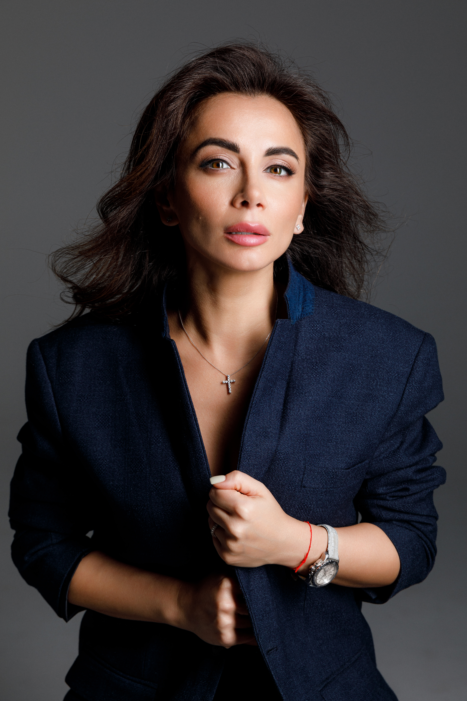
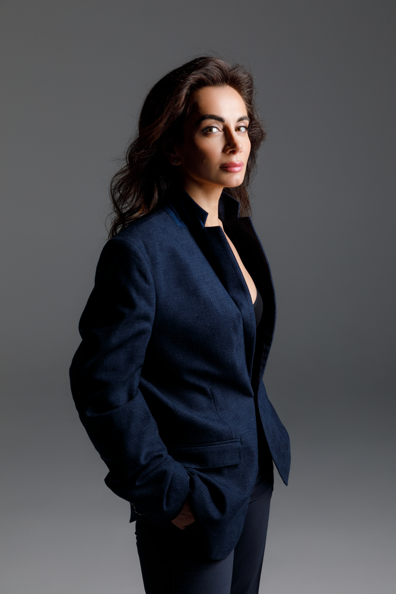
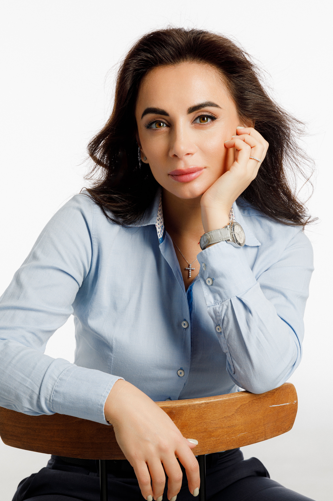
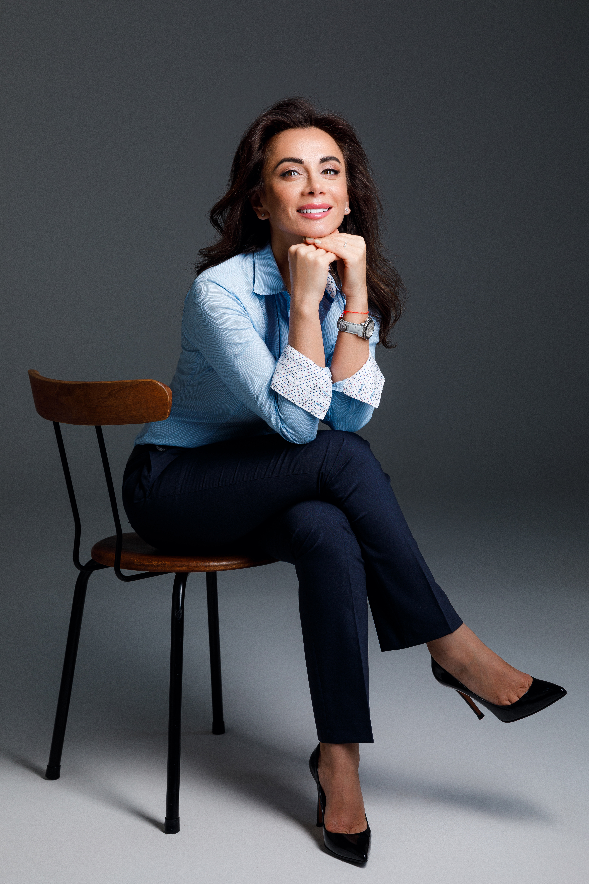

Лиана Абрамян — психотерапевт, гештальт-терапевт, EMDR-терапевт и специалист системно-феноменологического подхода. Более 8 лет сопровождаю клиентов в темах отношений, тревоги, травматического опыта, внутренней опоры и личных изменений.
Записаться на консультацию
Путь профессионального становления

Психотерапевт. Гештальт-терапевт. Психолог-консультант.
Выпускница Санкт-Петербургского Государственного Университета, Факультет Психологии.
Преподаватель учебных программ в институте ИСТиК. Веду индивидуальную и семейную терапию, терапевтические группы, расстановочные форматы и консультации по нумерологии.
Профессиональные достижения
Более 8 лет постоянного обучения и посещения терапевтических групп у лучших учителей по психологии и психосоматике. В год я провожу более 500 консультаций и веду более 10–12 терапевтических групп.
Запросы, с которыми ко мне чаще всего приходят
Если вы не уверены, подходит ли ваш запрос, напишите мне: мы вместе уточним формулировку и выберем формат работы.
Про доверие, безопасность и результат
Я строю терапию так, чтобы вам было безопасно говорить о важном и постепенно возвращать ощущение опоры. Мы не «ломаем» — мы аккуратно распутываем и собираем новое качество жизни.
В работе я опираюсь на современную психотерапию: гештальт-подход, EMDR и системно-феноменологическое мышление — и подбираю темп под ваш запрос, состояние и готовность к изменениям.
С первой встречи мы уточняем запрос, состояние, ожидания и формат. Это помогает понимать, куда движется работа и на что мы опираемся.
В работе важны бережность, ясные договорённости и уважение к личной истории клиента. Именно это создаёт пространство для глубины.
Это не разговор «в никуда»: в основе работы — методы, профессиональная практика, личная терапия и постоянное обучение.
В терапии не нужно быть готовым идеально. Можно приходить в растерянности, сомнениях и усталости — мы будем искать слова и опору постепенно.
То, на чём держится терапевтическая работа
Моя работа строится на сочетании терапевтической глубины, ясной профессиональной рамки и бережного контакта. В терапии важно не только говорить о сложном, но и выдерживать темп, в котором изменения становятся возможными.
Я опираюсь на гештальт-подход, EMDR-терапию, системно-феноменологическое мышление и регулярную профессиональную практику.
Всё, что происходит в терапевтическом пространстве, остаётся в рамках профессиональной этики и уважения к личной истории клиента.
Работа не строится на случайных советах. Мы исследуем переживания, повторяющиеся сценарии и способы контакта с собой и другими.
Более 8 лет практики, постоянное обучение, терапевтические группы, личная терапия и профессиональное развитие.
Индивидуальная терапия, семейная терапия, группы, расстановки, нумерологические консультации и образовательные форматы.
Понятный путь от первого сообщения до регулярной терапии
Иногда человеку сложно записаться не потому, что он не готов к изменениям, а потому что непонятно, что будет происходить дальше. Поэтому я стараюсь делать процесс ясным: с понятным входом, бережным темпом и уважением к вашему состоянию.
Вы пишете в Telegram и коротко описываете, что сейчас важно: состояние, запрос, формат или вопрос по ближайшим группам.
На первой встрече мы бережно собираем контекст, формулируем запрос и смотрим, какой формат будет наиболее подходящим.
Это может быть индивидуальная терапия, семейная работа, группа, расстановка или нумерологическая консультация.
Дальше мы двигаемся в согласованном темпе: через контакт, осознавание, чувства, тело, отношения и устойчивые изменения.
В терапии не нужно заранее знать “правильный ответ”. Достаточно начать с того, что уже есть.
НаписатьБез спешки. Без оценки. С опорой.
Иногда достаточно одного безопасного пространства, чтобы впервые честно услышать себя. Мы не “чиним” человека — мы возвращаем контакт, ясность и внутреннюю устойчивость.
Форматы работы
Индивидуальная работа с личным запросом: отношения, тревога, самооценка, опора, повторяющиеся сценарии, кризисные состояния и внутренние конфликты.
Работа с парными и семейными запросами: коммуникация, конфликты, близость, границы, доверие и повторяющиеся сценарии в отношениях.
Формат для тех, кто хочет посмотреть на личные сценарии, отношения, деньги, предназначение и повторяющиеся жизненные темы через нумерологический разбор.
Системно-феноменологический подход для работы с семейными, родовыми и повторяющимися жизненными сценариями. Ближайшие даты уточняются в Telegram.
Дистанционный формат для работы с системными запросами, когда важно исследовать ситуацию глубже и увидеть скрытую динамику процесса.
Расписание обновляется — ближайшие даты и условия участия можно уточнить в Telegram
Помимо индивидуальной терапии, Лиана проводит терапевтические группы, групповые расстановки и тематические консультации. Форматы меняются в зависимости от сезона, запроса участников и расписания.
Чтобы узнать ближайшие даты, условия участия и выбрать подходящий формат, напишите в Telegram — так информация всегда будет актуальной.

Очный и/или онлайн-формат для работы с семейными, родовыми и системными темами. Можно участвовать со своим запросом или в роли заместителя — условия и ближайшие даты уточняются индивидуально.
Группы для исследования отношений, чувств, самоценности, денег, личных границ и повторяющихся сценариев. Это формат, где важны не только знания, но и живой опыт рядом с другими участниками.
Разбор личных сценариев, отношений, денег, предназначения и повторяющихся жизненных тем через нумерологическую систему. Подходит тем, кто хочет получить более структурный взгляд на себя и свои процессы.
Не обязательно заранее понимать, нужна ли вам индивидуальная терапия, группа, расстановка или нумерологический разбор. Достаточно коротко описать запрос — и Лиана поможет выбрать ближайший подходящий шаг.
Голос, который помогает останавливаться и слышать себя
В подкасте я простыми словами говорю о том, что часто сложно назвать: про тревогу, опору, границы, отношения, самоценность и внутреннюю устойчивость. Это короткие эпизоды, чтобы возвращаться к себе — без давления и спешки.
Свяжитесь со мной удобным способом
